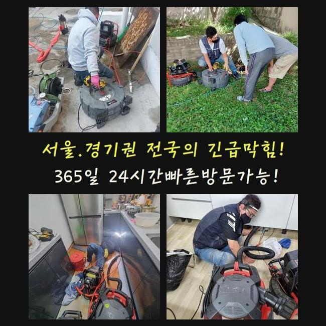
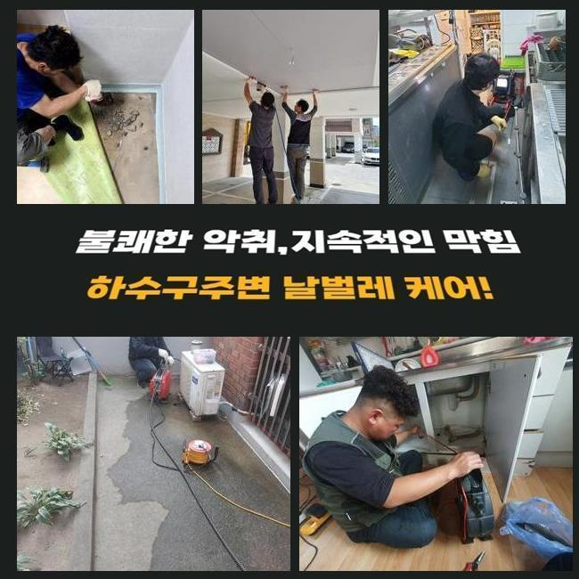
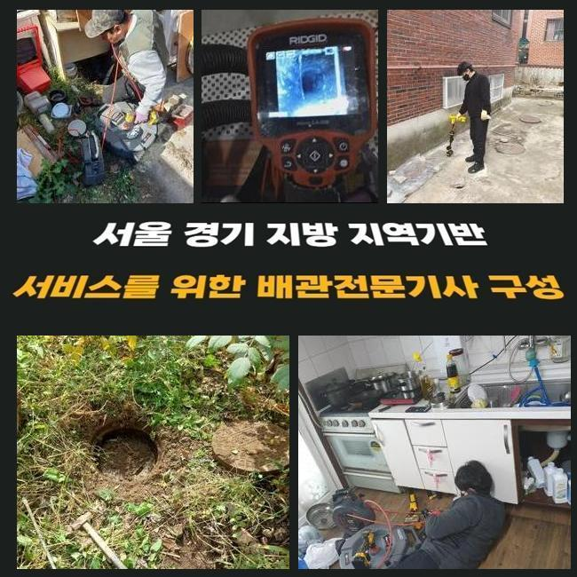
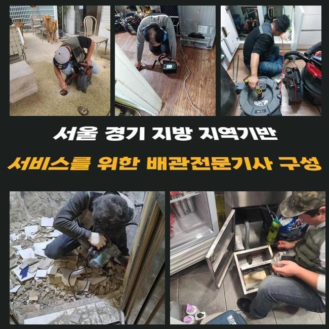
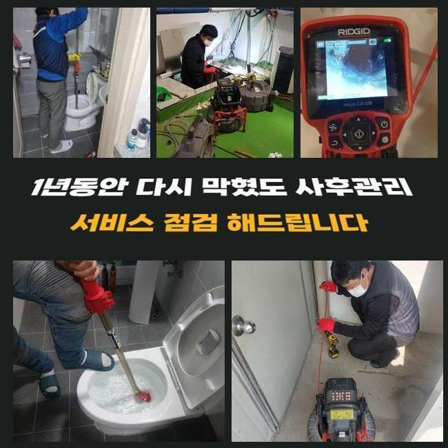
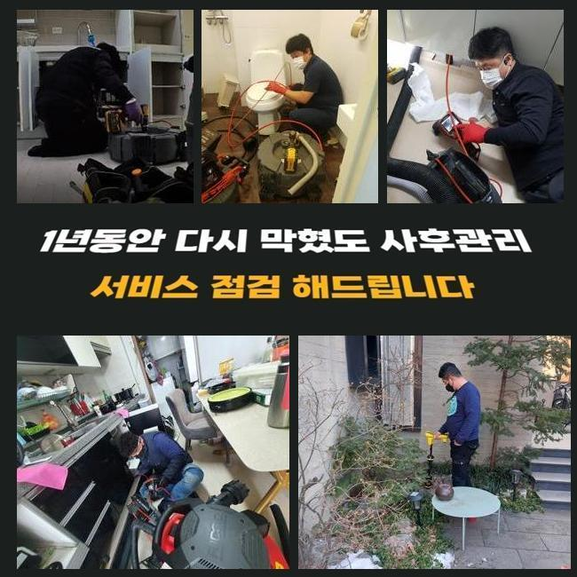
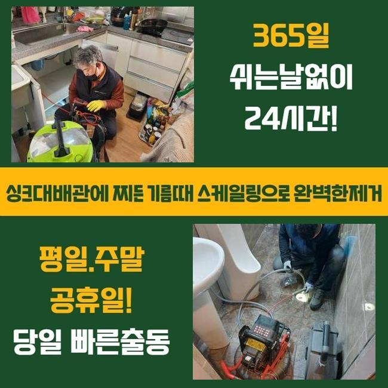

🏠 수원 연무동변기배관막힘 송죽동 하수구청소 누수탐지공사
수원 싱크대막힘 전문 시공 후기

📋 작업 개요
- 위치: 수원
- 서비스 유형: 싱크대막힘, 변기막힘, 하수구막힘, 배관막힘, 누수수리, 역류해결, 뚫는업체, 배관청소, 고압세척, 설비공사, 악취차단
- 작업 일시: 2025. 1. 31. 11:07
- 업체명: 하수구수사대 (010-5615-2118)
🔍 문제 상황
수원 연무동변기배관막힘 송죽동 하수구청소 누수탐지공사
하수구 물이 정상 배출이 안되면 일상 중에 어려움을 느낄 수 있어요
예시로 하나의 한 집 안의 싱크대가 꽉 차단되어 버려서 계속 물이 차오르는 케이스도 다수이며 변기설비나 바닥 배수구 세탁실 아래가 막혀버려서 이용에서의 어려움이 벌어지기도 합니다
공동주택 거주민분으로부터 의뢰를 받은 상황이라면 개별 배관이 막혔을 것이므로 실내 쪽에서 뚫는 장치들을 가동하여 뚫어냅니다
공용으로 쓰는 메인관로는 연립주택 건물일 때는 문제가 없는지 확인하고 정례적으로 정화작업을 시행하므로 여기가 다치는 것은 그나마 적은 편이에요
영업장이 자리한 빌딩이면 하수 문제가 나타날 가망성이 아무래도 높게 나타납니다
오늘 알려드릴 현장은 상가건물 내에 깔린 중심 배관이 폐쇄되어 영업공간 안에 설치된 각각의 설비들이 다 중단되어서 문제 요인을 찾아달라며 저희를 찾아주신 것이었습니다
현장 조사에 돌입해보니 오류가 있다는 게 감지된 중앙 파이프라인의 위치가 인지되어 착수했습니다
이 통로가 막힐 땐 가정집 안에 있는 가지관의 문제라고 치부할 수는 없고 공용으로 쓰는 배관에 데미지가 생겼거나 이상 이물질이 차올라서 통수가 부실하게 되었을 경우가 더욱 우세합니다

🔎 원인 분석
💡 전문가 진단: 정밀 진단 장비를 사용하여 슬러지의 고착 여부를 판명하고 타격/세척 작업을 실시했습니다.
많은 배관들의 물이 집합하는 배수로부터 뚫기 시작하여 다음은 미세한 파이프 내까지 정화합니다
고공에 위치한 배관 통로였기에 사다리 발판을 밟고서 수리를 해주기로 해서 하수도 폐쇄 문제 복구에 이로운 장비를 끌고가서 세팅했습니다
위쪽만 관통한다고 해도 더 아래 구간까지는 나아지지 않은 상태라 메인관로 정화를 도울 때는 관로의 중앙 부근까지 빠짐없이 정리해줘야 합니다
소재구를 직접 찾아서 장비 들어갈 구멍을 정해서 원활한 하수도 작업이 가능할 활동 반경을 만들어줍니다
배관을 밝게 비추는 카메라로 문제되는 파이프 안의 실황을 봐주기로 했습니다
어떤 곳이 오염됐는지 방해 요인이 되었던 그 존재에 대해서 작업에 당장 들어가기 전에 판단해야 시공 우선순위를 정립할 수 있게 됩니다
메인배관이 손상을 입었다면 파이프 사이즈가 대개 여유롭고 길이도 길어서 소규모의 주거지에 내방할 때 가져가는 석션장비를 돌려서는 나아질 수 없어요
자바라 줄이 저 아래까지 진입하지 못해서 흡입은 당연히 불가해요
기름기를 갈아내서 정화 작업을 효과적으로 도맡는 플렉스샤프트 장비 마찬가지로 오래 걸리며 구멍을 여러개 타공해야 하니 문제가 될 듯 했습니다

🔧 작업 과정
상가건물 내부의 하수도 개방이 이뤄지지 못하면 얼른 물길을 내서 기능을 회복시켜야 해요
넓은 구간에 적용되는 장비로 곳곳에 퍼져있는 찌꺼기들을 싹 쓸려나갈 수 있도록 집중적으로 청소해서 관로를 티끌없는 상태로 조성해야 하수구의 일련의 문제점들을 극복할 수 있게 돼요
이물들이 빼곡하게 찬 상태라면 작업에 착수하기가 그만큼 힘들어 질 수 있으니 우선 이물질을 수거하는 스프링기를 써서 제일 꽉 찬 구역을 풀리도록 건드려서 물의 흐름을 확보한 다음 완성도 높은 수로 정비를 들어가기로 결정했습니다
청소지점으로 장비를 내려보내려고 기름질이 뭉친 곳에 숨통이 트이게 하는 경로를 확보했습니다
오늘 보여드린 상가는 안에도 여러 음식가게들이 들어가 있었고 설거지하며 흘러간 기름기가 대량으로 물과 함께 방출되다보니 하수구 통로에 기름층이 코팅된 상황이었습니다
기름막은 뜨거운 물을 써도 녹아나지 않으므로 수분기가 마르면 석회화가 이뤄져서 돌덩이처럼 견고한 방해요소가 되어버립니다
제때 하수구 청소 시공을 수행하지 않고 나몰라라 한다면 차곡차곡 관로를 메우다가 오염구간이 점차 확장돼서 흘러나갈 길목이 다 막혀서 통수가 아예 이뤄지지 못하게 됩니다
유분기가 많은 기름기를 효율적으로 제거하려면 답은 고압세척 장비이며 높은 출력 덕택에 유연하게 오물이 붙은 하수구를 세정해 드릴 수 있었습니다
한몸처럼 붙어있던 오물이 수압의 타격으로 분산되는 모습들을 배관카메라를 동원해서 보며 부족함없이 청소해 나갔습니다
역부족인가 싶을정도로 강하고 방대한 양의 물질들이 조금씩 소강되어졌고 작은 입자만 겨우 떠다니는 상태로 보였습니다
고압세척을 시행할 때는 상황에 따라 다를 수 있지만 방해요인이 접착된 구간들을 두루 긁어내야만 막힘 사고나 역류와 같은 일들이 차단됩니다
다년간 몸을 불려왔을 슬러지를 강력한 물줄기로 해체시키고 배관 속에 들어가는 카메라로 사이사이를 확인하면서 시공의 질을 테스트했습니다
초반에는 하수가 내려갈 빈 공간이 보이지 않도록 지저분했던 설비시설이었으나 다수의 기구들을 활용한 처리를 거쳤더니 전과 딴판으로 변화한 말끔한 애프터를 보게 됐습니다
기능상으로도 완벽한지 검사하고자 수돗물을 폐기해보는 통수검사로써 방해 없이 흘러나가는 달라진 모습을 테스트를 하면서 확신을 얻고 시공의 마무리를 안내해드렸습니다


✅ 작업 완료
중간중간에 작업 도중에 타공을 해줬던 구역들은 기록해뒀다가 빈틈을 막아줄 전용필름으로 완벽하게 막아서 누수이슈가 터지지 않도록 조치를 취했습니다
올스탑이 되어버린 배수구문제로 막대한 피해를 입고있던 상가 건물 안에 있는 습한 물기가 고여만 갔고 싱크대 수돗물의 역류 증세도 생겼던 문제의 장소를 정리하고 작업을 마감할 수 있었습니다!
다뤄야 할 설비가 거대하다면 스스로 처리하기가 힘든 사안이며 단순하게 접근해서 무대포로 작업한다가 시설물이 데미지를 입는 경우도 왕왕 있습니다
가정집도 그렇지만 특수한 공간이나 상업시설이라도 올바른 원인 규명을 통해서 설비를 순탄하게 가동되도록 해드리니 믿고 맡겨주시면 감사드리겠습니다!




⚠️ 베란다 누수 및 방수 관리 방법
- ✅ 비가 많이 올 때 창틀 주변이나 아래층 천장에 얼룩이 생기는지 정기적으로 확인해 보세요.
- ✅ 우수관 주변 실리콘 마감이 들뜨거나 깨진 틈새가 있는지 손상 여부를 수시로 체크하세요.
- ✅ 베란다 바닥 타일의 줄눈(메지)이 소실되면 그 틈으로 물이 침투하여 누수가 유발됩니다.
- ✅ 누수 의심 증상 발견 시 방치하면 아래층 손실이 커지므로 즉시 전문가의 진단을 받으십시오.
💡 핵심 정리
- 확실한 장비 작업(내시경 점검 및 샤프트 스케일링)으로 원인을 뿌리 뽑습니다.
- 작업 후 1년 이내에 동일한 부위 재발 시 100% 무상 A/S 서비스를 보장합니다.
- 서울 · 경기 · 인천 전 지역에 24시간 언제든 긴급 출동할 수 있도록 항시 대기 중입니다.
❓ 자주 묻는 질문 (FAQ)
🚨 수원 싱크대막힘 문제로 고민이신가요?
정확한 원인 진단과 확실한 시공으로 재발 없는 해결을 약속드립니다.
24시간 긴급 출동 | 서울 · 경기 · 인천 전지역 | 1년 내 재발 시 무상 A/S